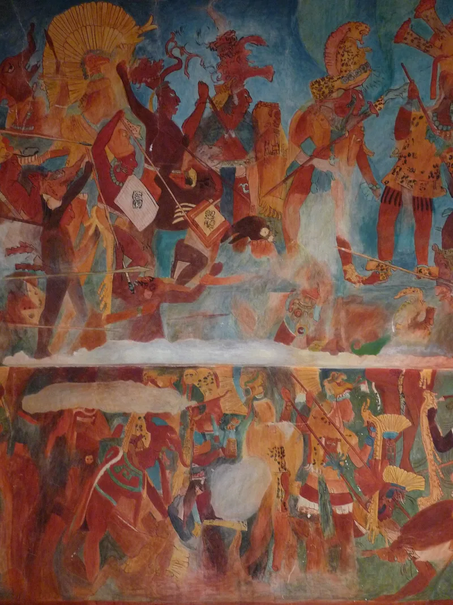
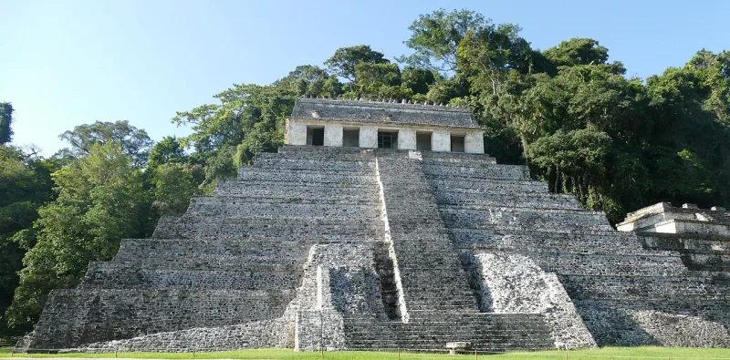
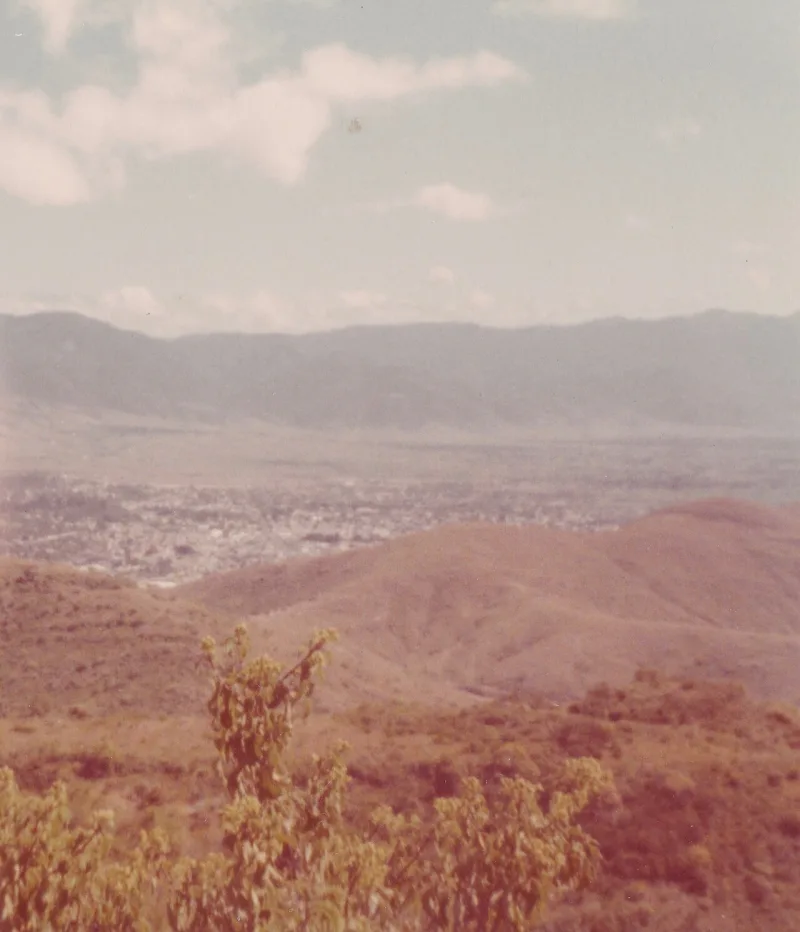

No good counter-argument has been published by LDS scholars.
Cities. Temples.
Roads. Coins.
Steel swords and armour. Civilizations in the millions.
And a final battle with hundreds of thousands of dead.
After about 190 years of digging in the Americas: not one city. Not one battlefield, road, temple or skeleton tied to the book.
No inscription. And no site the church itself points to.
John Sorenson keeps the whole story inside a corridor of about 500 miles in Central America. If that is right, an empty hemisphere proves nothing.
He lists hundreds of claimed matches with Maya culture.
The church takes no official position on where it happened. And the small-map idea is a long way from what was taught for a century.
Back then, the Lamanites were the ancestors of all American Indians.
"Where did it happen? I'd genuinely like to read the church's position on that."



Sorenson's 500-mile map, and the NHM altars in Yemen sit right on Lehi's route.
Five replies, and one is a genuine hit.
John Sorenson's limited-geography model keeps the story inside a corridor of about 500 miles in Mesoamerica. On that model a hemisphere-wide blank is beside the point. He lists over 400 claimed matches.
Second, identifying a site may be impossible in principle. Only Maya script can be read with confidence, and the conquest erased most old place-names. Third, John Clark counts about 60 concrete things the text asserts. He reckons support for them rose from 13% in 1842 to 75% by 2005.
Fourth, and this is the strong one, the NHM altars from Yemen date to the seventh or sixth century BC. They sit on the right bearing for Lehi's route. Fifth, FAIR notes the famous Smithsonian statement was a form letter to cut down mail, not a research finding.
Strong for you: NHM is in Arabia, and says nothing about the New World two-thirds.
The reply explains why no signpost says Zarahemla. It does not answer the harder version. The text asserts a literate people with Old World crops, metalwork and writing. No remains of that kind exist anywhere in the Americas, and finding them would not require reading a place-name.
Clark's tally is generic. Warfare, thrones and cities are true of almost any complex society. NHM is a real hit, but it is in Arabia, where the story overlaps documented geography. It says nothing about the two-thirds of the book set in the New World.
And the small map is a retreat from the hemispheric reading Joseph Smith and every nineteenth-century leader held.